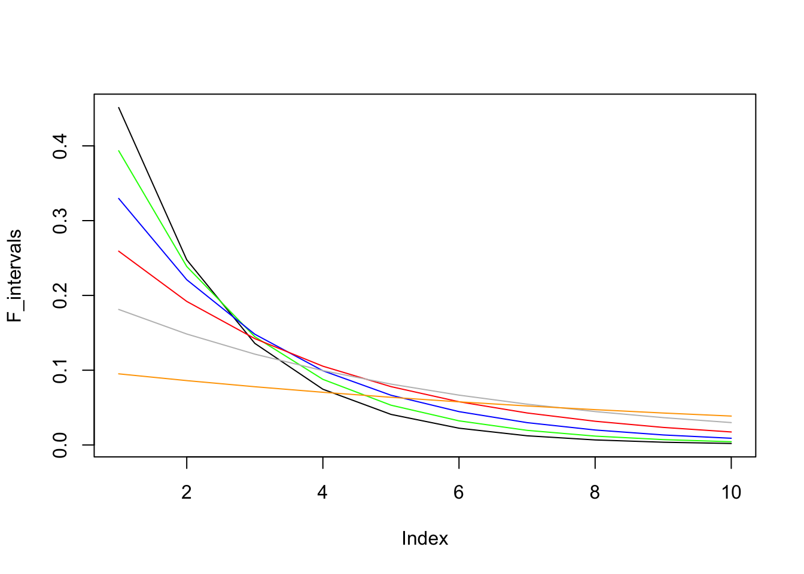

Poisson distribution describe the probability of \(x\) times of arrivals in a given time interval, denoted as \(P(X=x)\). Poisson distribution has a parameter \(\lambda\), called the arrival rate or intensity.
Assumptions:
Given the above assumptions, the probability of 1 event occurs in any one small interval \(\frac{1}{n}\) is \(\lambda(\frac{1}{n}) = \frac{\lambda}{n}\)
Recall that Binomial Distribution:
\[P(X=x) = C_x^n \ \ p^x (1-p)^{n-x}\]
Derive poisson distribution for a time interval of 1 unit by taking \(n\to\infty\) of the binomial distribution. Each trial is a Bernoulli process - whether there is 1 event occurs in a small inverval of time \(\frac{1}{n}\). \[ \begin{aligned} P(X=x) &= \lim_{n\to\infty} \frac{n!}{x!(n-x)!} \cdot (\frac{\lambda}{n})^x \cdot (1-\frac{\lambda}{n})^{n-x}\\ &= \lim_{n\to\infty} \frac{n(n-1) ...(n-x+1)}{n^x} \frac{\lambda^x}{x!}(1-\frac{\lambda}{n})^n(1-\frac{\lambda}{n})^{-x} \\ &= 1 \cdot \frac{\lambda^x}{x!} \cdot e^{-\lambda} \cdot 1 \\ & = \frac{\lambda^x e^{-\lambda}}{x!} \end{aligned} \]
The probability for the time T of the first arrival follows Exponential distribution. The first arrival time between \(0\) and \(t\) is given by the cumulative distribution \(F_T(t)\):
\[ \begin{aligned} F_T(t) &= P(T \leq t) \\ &= 1-P(T>t)\\ &= 1-Poisson(0,t)\\ &= 1- e^{-\lambda t}\\ \end{aligned} \]
The p.d.f. can then be derived by taking the derivative:
\[f_T(t) = \lambda e^{-\lambda t}\]
Note that \(f_T(t)\) is not the probability of 1st arrival at time \(t\). The probability of 1st arrival at exact time \(t\) is 0 for exponential distribution, which is a continunous distribution.
The graph below shows the probability of FIRST arrival within each time interval (0,1], (1,2],…(9,10]. It shows that to catch the first arrival, we should choose the earlist time interval as possible given a fixed legnth of time.
times <- times <- seq(0,10,1)
lambdas <- c(0.6,0.5,0.4, 0.3, 0.2,0.1)
colors <- c('black','green','blue','red','grey','orange')
F_intervals <- rep(NA, length(times)-1)
for(k in 1:length(lambdas)) {
lambda <- lambdas[k]
for(i in 2:length(times)) {
F_intervals[i-1] <- exp(-lambda*times[i-1])-exp(-lambda*times[i])
}
if(k == 1) {
plot(F_intervals, type = 'l')
} else {
lines(F_intervals, col = colors[k])
}
}
The exponential distribution is also considered the continuenous version of Geometric distrubition, where the Geometric distribution can be expressed as the following equation and the meaning is how many fail \(x\) one should try before he/she hit the first success:
\[P(X=x) = (1-p)^{x}p\]
The following example shows an example of Geometric distribution. Ben has a playlist that has 10 songs and his favorite song is “Bohemian Rhapsody”. If the player randomly plays the song in the playlist and the same song can be repeated, what’s the probability that he hears “Bohemian Rhapsody” for the first time at after 5 songs have played?
First, we need to know the Expected Value of the Geometric distribution:
\[ \begin{aligned} E[X] &= \sum_{x=1}^{\infty} x(1-p)^{x}p \\ &= (1-p)p + 2(1-p)^2p+3(1-p)^3p + .... \\ (1-p)E[X] &= \ \ \ \ \ \ \ \ \ \ \ \ \ \ \ \ \ \ \ \ \ (1-p)^2p + 2(1-p)^3p+...\\ E[X]-(1-p)E[X] &= (1-p)p + (1-p)^2+ (1-p)^3p+ ...\\ &= \frac{(1-p)p} {1-(1-p)} = 1-p\\ E[X] &= (1-p) \ \frac{1}{1-(1-p)} \\ &= (1-p) \ \frac{1}{p} \\ &= \frac{1-p}{p} \\ \end{aligned} \] So in this example, the expected number of times before “Bohemian Rhapsody” is: \(\frac{1-1/10}{1/10} = 9\)